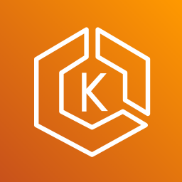
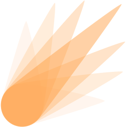
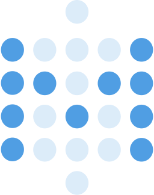

Solution Architecture
OPEN DATA PLATFORM ON KUBERNETES
Open-source lakehouse on Amazon EKS, built hands-on
AWS

Kubernetes
INFRASTRUCTURE AS CODE
Terraform
AWS

Amazon EKS

Amazon VPC
IAM · IRSA
GITOPS
OBSERVABILITY

Prometheus

Grafana
DATA SOURCE

PostgreSQL
TPC-H OLTP · CDC

DuckDB
Data generation
ORCHESTRATION
Apache Airflow
CATALOG
 APACHE POLARIS
APACHE POLARISEXTRACT AND LOAD
Airbyte
BRONZE
S3 Bronze
TRANSFORM

Apache Spark
SILVER
S3 Silver

TRANSFORM
Apache Spark
GOLD
S3 Gold
BI

Metabase